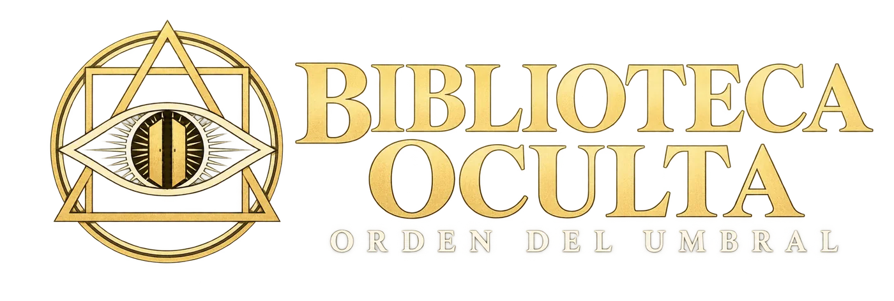

Catálogo de SoloLibros
Las fichas del catálogo llevan al apartado del título en su fuente. Allí puedes revisar el autor y las opciones de acceso.
Explorar la fuente ↗
Explora textos de esoterismo, simbolismo y tradiciones espirituales. Elige una portada y descubre su lectura en la fuente.
Explorar el catálogo ↓↗ Las portadas abren la ficha del texto en una web externa. Allí encontrarás sus opciones de lectura o descarga. No almacenamos los libros.
Prueba otro título, cambia los filtros o guarda tu primer favorito.
Organizamos referencias públicas para que puedas encontrar lecturas. Los archivos, las condiciones de uso y su disponibilidad dependen de cada fuente.
Las fichas del catálogo llevan al apartado del título en su fuente. Allí puedes revisar el autor y las opciones de acceso.
Explorar la fuente ↗Una fuente adicional para buscar textos de ocultismo. Esta colección no está incluida en el contador del catálogo.
Visitar la colección ↗Que un archivo sea accesible no demuestra que su distribución esté autorizada. Revisa las condiciones de la fuente y los derechos de cada edición. Este catálogo no certifica licencias ni concede derechos sobre libros, traducciones o ilustraciones.
Si un enlace cambia, solicita acceso o deja de funcionar, consulta la fuente. No prometemos descargas automáticas ni disponibilidad permanente.
Las imágenes incluyen portadas de ediciones publicadas y primeras páginas de los documentos enlazados. Una portada puede corresponder a otra edición de la misma obra. Las lecturas sin imagen disponible usan un diseño editorial del catálogo. Los favoritos se guardan únicamente en este navegador.